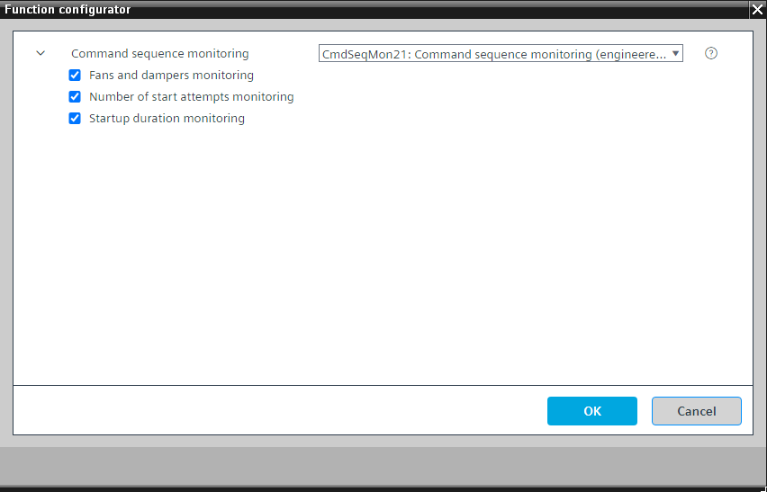

[CmdSeqMon21] 命令序列监控
Program block, name / node subtype: [CmdSeqMon21] Command sequence monitoring
Library hierarchy: Ventilation and air conditioning functions
Family: CmdSeqMon
项目树 | 图表 |
|---|---|
|
|
|


Configurator


程序块存储在没有 I/Os. 的库中 使用auto-create and auto-connect函数创建 I/Os 和 /or 将它们连接到接口块，例如 R_A、CMD_B。或者，从包含库中预定义 I/Os 的文件夹中取出 I/Os，并从工厂中取出 /or，并将它们连接到接口块。
监控启动过程是否成功以及正在运行的工厂的风门和风扇的状态。
参数启用和禁用监控。
该程序块具有以下可选功能：
Option: Fans and dampers monitoring
当设备正在运行且启动序列已完成（功能块 CMDSEQ_B 不再“进行中”）时，将监控风扇（必须为“打开”）和风门（必须为“打开”）。如果风扇停止或风门未打开，则会生成停止设备的警报和信号。
Option: Number of start attempts monitoring
如果在短时间内（可参数化，例如 15 分钟）内尝试大量启动（可参数化，例如 4 次尝试），则会生成停止设备的警报和信号。
Option: Startup duration monitoring
如果启动过程花费太长时间（可参数化，例如 10 分钟），则会生成停止设备的警报和信号。出现这种情况的可能原因是功能块 CMDSEQ_B 中的聚合设置为“等待反馈”，并且该聚合缺少操作状态信号，并且没有针对缺少反馈的内部警报，这也会导致工厂停止运行。
姓名 | 描述 | 类型 | 报警/通知类 | 趋势/类型 |
|---|---|---|---|---|
StupDurMon | Startup duration monitoring | BCalcVal: Binary calculated value | 是的，4 | No |
NumSttAtpsMon | Number of start attempts monitoring | BCalcVal: Binary calculated value | 是的，4 | No |
FanDmpMon | Fans and dampers monitoring | BCalcVal: Binary calculated value | 是的，4 | No |